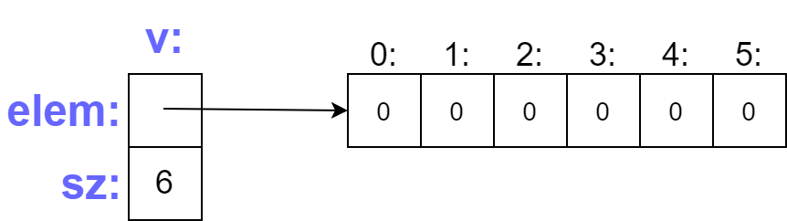
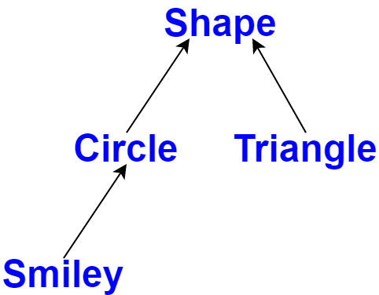
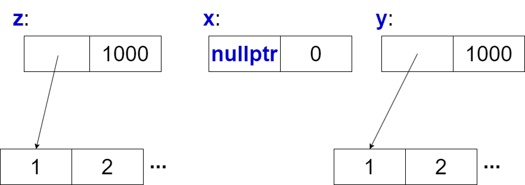

Classes in C++
A tour of C++ - Bjarne Stroustrup (Chapter 4)
Introduction to Classes
Classes in C++
- The central language feature of C++ is the class
- A class is a user-defined type provided to represent a concept in the code of a program
- A program built upon a well-chosen set of classes is far easier to understand and get right than one that builds everything directly in terms of the built-in types
- Most programming techniques rely on the design and implementation of specific kinds of classes
Types of Classes
- The needs and tastes of programmers vary immensely
- Consequently, the support for classes is extensive
- We will focus on the basic support for three important kinds of classes:
- Concrete classes
- Abstract classes
- Classes in class hierarchies
Concrete Classes
What Are Concrete Classes?
- The basic idea of concrete classes is that they behave “just like built-in types”
- For example, a complex number type and an infinite-precision integer are much like built-in
int, except that they have their own semantics and sets of operations - Similarly, a vector and a string are much like built-in arrays, except that they are better behaved
- The defining characteristic of a concrete type is that its representation is part of its definition
Characteristics of Concrete Classes
- In many cases, such as a vector, the representation includes pointers to data stored elsewhere
- This allows implementations to be optimally efficient in time and space
- In particular, this allows us to:
- Place objects on the stack, in statically allocated memory, and in other objects
- Refer to objects directly (not just through pointers or references)
- Initialize objects immediately and completely (using constructors)
- Copy objects
Trade-offs
- The representation can be private and accessible only through member functions, but it is present
- Therefore, if the representation changes significantly, users must recompile
- This is the price for having concrete types behave exactly like built-in types
- For types that don’t change often, and where local variables provide clarity and efficiency, this is acceptable and often ideal
- Concrete types can keep major parts of their representation on the heap and access them through the class object itself
- That’s how
vectorandstringare implemented - as resource handles with carefully crafted interfaces
Arithmetic Types
Complex Number Class
class complex {
double re, im; // representation: two doubles
public:
complex(double r, double i) : re{r}, im{i} {} // construct from two scalars
complex(double r) : re{r}, im{0} {} // construct from one scalar
complex() : re{0}, im{0} {} // default constructor
double real() const { return re; }
void real(double d) { re = d; }
double imag() const { return im; }
void imag(double d) { im = d; }
complex& operator+=(complex z) {
re += z.re;
im += z.im;
return *this;
}
complex& operator-=(complex z) {
re -= z.re;
im -= z.im;
return *this;
}
complex& operator*=(complex); // defined out-of-class
complex& operator/=(complex); // defined out-of-class
};Complex Class Details
- This is a simplified version of the standard-library complex
- The class definition contains only operations requiring access to the representation
- The representation is simple and conventional
- For efficiency, complex must have simple operations inlined
- Functions defined in a class are inlined by default
- A constructor that can be invoked without an argument is a default constructor
- The
constspecifiers indicate that functions don’t modify the object
Operations Not Requiring Direct Access
Many useful operations don’t require direct access to the representation:
complex operator+(complex a, complex b) { return a += b; }
complex operator-(complex a, complex b) { return a -= b; }
complex operator-(complex a) { return {-a.real(), -a.imag()}; } // unary minus
complex operator*(complex a, complex b) { return a *= b; }
complex operator/(complex a, complex b) { return a /= b; }
bool operator==(complex a, complex b) {
return a.real() == b.real() && a.imag() == b.imag();
}
bool operator!=(complex a, complex b) {
return !(a == b);
}- Arguments passed by value are copied, allowing modification without affecting the caller
- The modified copy becomes the return value
Using the Complex Class
void f(complex z) {
complex a{2.3}; // construct {2.3, 0.0}
complex b{1 / a};
complex c{a + z * complex{1, 2.3}};
if (c != b)
c = -(b / a) + 2 * b;
}- The compiler converts operators into appropriate function calls
- For example,
c != bbecomesoperator!=(c, b) - And
1/abecomesoperator/(complex{1}, a) - Overloaded operators should be used cautiously and conventionally
- The syntax is fixed by the language
- You cannot change the meaning of operators for built-in types
Modern Complex Example
#include <complex>
#include <iostream>
int main() {
// Using standard library complex
std::complex<double> z1{3.0, 4.0};
std::complex<double> z2{1.0, 2.0};
auto z3 = z1 + z2;
auto z4 = z1 * z2;
std::cout << "z1 + z2 = " << z3 << "\n";
std::cout << "z1 * z2 = " << z4 << "\n";
std::cout << "abs(z1) = " << std::abs(z1) << "\n";
std::cout << "arg(z1) = " << std::arg(z1) << " radians\n";
return 0;
}Containers
Introduction to Containers
- A container is an object holding a collection of elements
- Vector is a container type for objects that hold collections
- The Vector from the previous lecture is simple and provides range-checked access
- However, it has a fatal flaw: it allocates elements using
newbut never deallocates them - We need a mechanism to ensure memory allocated by the constructor is deallocated: a destructor
Vector with Destructor
class Vector {
private:
double* elem; // elem points to an array of sz doubles
int sz;
public:
Vector(int s) : elem{new double[s]}, sz{s} { // constructor
for (int i = 0; i != s; ++i)
elem[i] = 0;
}
~Vector() { delete[] elem; } // destructor: release resources
double& operator[](int i);
int size() const;
};- The destructor name is
~followed by the class name - It’s the complement of a constructor
- The constructor allocates memory using
new - The destructor frees memory using
delete
Vector Usage Example
void fct(int n) {
Vector v(n);
// ... use v ...
{
Vector v2(2 * n);
// ... use v and v2 ...
} // v2 is destroyed here
// ... use v ...
} // v is destroyed here- Vector obeys the same rules as built-in types like
intandchar - The constructor/destructor combination is the basis for many elegant techniques
- It’s the foundation for C++ resource management
Vector Memory Representation
- The constructor allocates elements and initializes members
- The destructor deallocates the elements
- This handle-to-data model manages data that varies in size
- This technique is called Resource Acquisition Is Initialization (RAII)
- RAII eliminates “naked
new” operations - Avoiding naked
newanddeletemakes code less error-prone
Initializing Containers
Convenient Initialization Methods
- A container exists to hold elements, so we need convenient ways to add elements
- We can create a Vector with the right size and assign to elements
- More elegant approaches:
- Initializer-list constructor: initialize with a list of elements
push_back(): add elements at the end of the sequence
Declaration
class Vector {
public:
Vector(std::initializer_list<double>); // initialize with a list
void push_back(double); // add element at end
// ...
};The push_back is useful for input of arbitrary numbers of elements:
Vector read(std::istream& is) {
Vector v;
for (double d; is >> d;) // read floating-point values into d
v.push_back(d); // add d to v
return v;
}- The input loop terminates on end-of-file or formatting error
- Each number read is added to the Vector
- A
for-statement keeps the scope ofdlimited to the loop
Initializer List Constructor
Vector v1 = {1, 2, 3, 4, 5}; // v1 has 5 elements
Vector v2 = {1.23, 3.45, 6.7, 8}; // v2 has 4 elementsImplementation:
Vector::Vector(std::initializer_list<double> lst)
: elem{new double[lst.size()]}, sz{static_cast<int>(lst.size())} {
std::copy(lst.begin(), lst.end(), elem);
}- The compiler creates an
initializer_listobject from{}-lists - The constructor copies elements from the list into the Vector’s array
std::copyprovides an efficient way to copy elements
Modern Vector Implementation
#include <memory>
#include <initializer_list>
#include <algorithm>
class Vector {
private:
std::unique_ptr<double[]> elem;
int sz;
public:
Vector(int s) : elem{std::make_unique<double[]>(s)}, sz{s} {
std::fill(elem.get(), elem.get() + sz, 0.0);
}
Vector(std::initializer_list<double> lst)
: elem{std::make_unique<double[]>(lst.size())},
sz{static_cast<int>(lst.size())} {
std::copy(lst.begin(), lst.end(), elem.get());
}
double& operator[](int i) { return elem[i]; }
int size() const { return sz; }
};
// Usage
int main() {
Vector v1{1.1, 2.2, 3.3, 4.4}; // Initializer list
Vector v2(10); // Default values
return 0;
}Abstract Types
What Are Abstract Types?
- Types like
complexandVectorare concrete types - their representation is part of their definition - In contrast, an abstract type completely insulates users from implementation details
- We decouple the interface from the representation
- We give up genuine local variables
- Since we don’t know the representation size, we must allocate objects on the heap
- We access them through references or pointers
Container Interface
class Container {
public:
virtual double& operator[](int) = 0; // pure virtual function
virtual int size() const = 0; // const member function
virtual ~Container() {} // destructor
};- This class is a pure interface to specific containers
- The word
virtualmeans “may be redefined later in a derived class” - A function declared
virtualis called a virtual function - The
= 0syntax indicates a pure virtual function - Some derived class must define the function
- It’s not possible to create an object that is just a
Container - A class with a pure virtual function is an abstract class
Using the Container Interface
void use(Container& c) {
const int sz = c.size();
for (int i = 0; i != sz; ++i)
std::cout << c[i] << '\n';
}use()uses the Container interface in complete ignorance of implementation- It uses
size()and[]without knowing which type provides the implementation - A class that provides an interface to various other classes is a polymorphic type
- Container doesn’t have a constructor - it has no data to initialize
- Container has a virtual destructor - common for abstract classes
- The destructor ensures proper cleanup when destroying through a pointer
Implementing Container with Vector
class Vector_container : public Container { // implements Container
Vector v;
public:
Vector_container(int s) : v(s) {} // Vector of s elements
~Vector_container() {}
double& operator[](int i) override { return v[i]; }
int size() const override { return v.size(); }
};- The
: publicmeans “is derived from” or “is a subtype of” Vector_containeris derived fromContainerContaineris a base ofVector_container- Alternative terminology: subclass and superclass
- The derived class inherits members from its base class
- The members
operator[]andsize()override base class members
Using Vector_container
use()doesn’t know aboutVector_container- It only knows the
Containerinterface - It works just as well for any implementation of
Container - Some other function must create the concrete object
Alternative Implementation with List
class List_container : public Container {
std::list<double> ld; // standard-library list
public:
List_container() {}
List_container(std::initializer_list<double> il) : ld{il} {}
~List_container() {}
double& operator[](int i) override;
int size() const override { return static_cast<int>(ld.size()); }
};
double& List_container::operator[](int i) {
for (auto& x : ld) {
if (i == 0) return x;
--i;
}
throw std::out_of_range("List_container");
}Using List_container
use(Container&)has no idea if its argument is aVector_container,List_container, or other container type- It doesn’t need to know - it only knows the interface defined by
Container use()needn’t be recompiled if the implementation changes or new derived classes are added- The downside of this flexibility is that objects must be manipulated through pointers or references
Virtual Functions
How Virtual Functions Work
void use(Container& c) {
const int sz = c.size();
for (int i = 0; i != sz; ++i)
std::cout << c[i] << '\n';
}
void g() {
Vector_container vc{10, 9, 8, 7, 6, 5, 4, 3, 2, 1, 0};
use(vc);
}
void h() {
List_container lc = {1, 2, 3, 4, 5, 6, 7, 8, 9};
use(lc);
}- How is the call
c[i]inuse()resolved to the rightoperator[]()? - When
h()callsuse(),List_container’soperator[]()must be called - When
g()callsuse(),Vector_container’soperator[]()must be called
Virtual Function Table (vtbl)
- A Container object must contain information to select the right function at run time
- The compiler converts virtual function names into an index into a table of pointers to functions
- This table is called the virtual function table or vtbl
- Each class with virtual functions has its own vtbl identifying its virtual functions
vtbl Illustration

vtbl Performance
- The functions in the vtbl allow correct usage even when object size and data layout are unknown
- The caller only needs to know:
- The location of the pointer to the vtbl in a Container
- The index used for each virtual function
- The virtual call mechanism can be made almost as efficient as normal function calls (within 25%)
- Space overhead: one pointer per object of a class with virtual functions, plus one vtbl per such class
Class Hierarchies
Introduction to Class Hierarchies
- The Container example is a simple class hierarchy
- A class hierarchy is a set of classes ordered in a lattice created by derivation
- Used to represent hierarchical relationships such as:
- “A fire engine is a kind of truck which is a kind of vehicle”
- “A smiley face is a kind of circle which is a kind of shape”
- Huge hierarchies with hundreds of classes are common
- They can be both deep and wide
Shape Hierarchy Example
- Arrows represent inheritance relationships
- For example, class
Circleis derived from classShape
Shape Base Class
class Shape {
public:
virtual Point center() const = 0; // pure virtual
virtual void move(Point to) = 0;
virtual void draw() const = 0; // draw on current "Canvas"
virtual void rotate(int angle) = 0;
virtual ~Shape() {} // destructor
};- This interface is an abstract class
- Nothing is common for every Shape except the vtbl pointer
- The representation varies by derived class
Using the Shape Interface
- General functions can manipulate vectors of Shape pointers
- They work for any concrete Shape implementation
Circle Class
class Circle : public Shape {
public:
Circle(Point p, int rr); // constructor
Point center() const override { return x; }
void move(Point to) override { x = to; }
void draw() const override;
void rotate(int) override {} // Circle rotation does nothing
private:
Point x; // center
int r; // radius
};- To define a particular shape, we say it is a
Shape - We specify its particular properties including virtual functions
Smiley Class
class Smiley : public Circle {
public:
Smiley(Point p, int r) : Circle{p, r}, mouth{nullptr} {}
~Smiley() {
delete mouth;
for (auto p : eyes)
delete p;
}
void move(Point to) override;
void draw() const override;
void rotate(int) override;
void add_eye(Shape* s) { eyes.push_back(s); }
void set_mouth(Shape* s);
virtual void wink(int i); // wink eye number i
private:
std::vector<Shape*> eyes; // usually two eyes
Shape* mouth;
};Smiley Draw Implementation
Smiley::draw()uses calls to base and memberdraw()functions- The
push_back()member adds an element to the vector, increasing its size by one - Smiley keeps its eyes in a standard-library vector
- The destructor deletes them when the Smiley is destroyed
Virtual Destructors
- Shape’s destructor is virtual and Smiley’s destructor overrides it
- A virtual destructor is essential for an abstract class
- Objects of derived classes are usually manipulated through the base class interface
- They may be deleted through a pointer to a base class
- The virtual function mechanism ensures the proper destructor is called
- That destructor implicitly invokes destructors of bases and members
- We can add data members, operations, or both when defining a new class by derivation
Explicit Overriding
The Override Specifier
- A function in a derived class overrides a virtual function in a base class if it has exactly the same name and type
- In large hierarchies, it’s not always obvious if overriding was intended
- A function with a slightly different name or type may be:
- Intended to override, or
- Intended to be a separate function
- To avoid confusion, explicitly state that a function is meant to override
Using Override
class Smiley : public Circle {
public:
Smiley(Point p, int r) : Circle{p, r}, mouth{nullptr} {}
~Smiley() {
delete mouth;
for (auto p : eyes)
delete p;
}
void move(Point to) override;
void draw() const override;
void rotate(int) override;
void add_eye(Shape* s) { eyes.push_back(s); }
void set_mouth(Shape* s);
virtual void wink(int i); // wink eye number i
private:
std::vector<Shape*> eyes;
Shape* mouth;
};- If you mistype
moveasmve, you get a compiler error - No base of Smiley has a virtual function called
mve - If you added
overridetowink(), you’d get an error message
Modern Override Example
class Base {
public:
virtual void func1() const;
virtual void func2(int x);
virtual ~Base() = default;
};
class Derived : public Base {
public:
void func1() const override; // OK: exact match
// void func1() override; // Error: missing const
// void func2(double x) override; // Error: wrong parameter type
void func2(int x) override; // OK: exact match
};Benefits from Hierarchies
Two Types of Benefits
A class hierarchy offers two kinds of benefits:
Interface Inheritance
- An object of a derived class can be used wherever a base class object is required
- The base class acts as an interface for the derived class
- Examples:
ContainerandShapeclasses - Such classes are often abstract classes
Implementation Inheritance
- A base class provides functions or data that simplifies derived class implementation
- Examples: Smiley’s use of Circle’s constructor and
Circle::draw() - Such base classes often have data members and constructors
Concrete vs Hierarchical Classes
- Concrete classes - especially those with small representations - are like built-in types:
- We define them as local variables
- Access them using their names
- Copy them around, etc.
- Classes in class hierarchies are different:
- We tend to allocate them on the heap using
new - We access them through pointers or references
- We tend to allocate them on the heap using
Reading Shapes Example
enum class Kind { circle, triangle, smiley };
Shape* read_shape(std::istream& is) {
// ... read shape header from is and find its Kind k ...
switch (k) {
case Kind::circle: {
// read circle data {Point,int} into p and r
return new Circle{p, r};
}
case Kind::triangle: {
// read triangle data {Point,Point,Point} into p1, p2, p3
return new Triangle{p1, p2, p3};
}
case Kind::smiley: {
// read smiley data {Point,int,Shape,Shape,Shape}
Smiley* ps = new Smiley{p, r};
ps->add_eye(e1);
ps->add_eye(e2);
ps->set_mouth(m);
return ps;
}
}
}Using read_shape
void user() {
std::vector<Shape*> v;
while (std::cin)
v.push_back(read_shape(std::cin));
draw_all(v); // call draw() for each element
rotate_all(v, 45); // call rotate(45) for each element
for (auto p : v)
delete p; // remember to delete elements
}user()has no idea which kinds of shapes it manipulates- The code can be compiled once and used for new Shapes added later
- There are no pointers to shapes outside
user() user()is responsible for deallocating them- This uses the
deleteoperator and relies on Shape’s virtual destructor
Virtual Destructor Importance
- Because the destructor is
virtual,deleteinvokes the destructor for the most derived class - This is crucial because a derived class may have acquired resources such as:
- File handles
- Locks
- Output streams
- These need to be released
- In this case, a Smiley deletes its
eyesandmouthobjects
Hierarchy Navigation
Dynamic Cast
- The
read_shape()function returnsShape*so we can treat all Shapes alike - But what if we want to use a member function only in a particular derived class?
- For example, what if we want to call
Smiley’swink()? - We can ask “is this Shape a kind of Smiley?” using the
dynamic_castoperator
Using dynamic_cast with Pointers
Shape* ps{read_shape(std::cin)};
if (Smiley* p = dynamic_cast<Smiley*>(ps)) {
// ... ps is a Smiley, use p ...
p->wink(0); // wink left eye
}
else {
// ... not a Smiley, try something else ...
}- If the object pointed to by
psis not of the expected type (Smiley) or derived from it,dynamic_castreturnsnullptr - We use
dynamic_castto a pointer type when a pointer to a different derived class is valid - We then test whether the result is
nullptr - This test can be placed in the initialization of a variable in a condition
Using dynamic_cast with References
When a different type is unacceptable, use dynamic_cast to a reference type:
Shape* ps{read_shape(std::cin)};
Smiley& r{dynamic_cast<Smiley&>(*ps)}; // throws std::bad_cast if not Smiley- If the object is not of the expected type,
bad_castis thrown - Code is cleaner when
dynamic_castis used with restraint - If we can avoid using type information, we can write simpler and more efficient code
- Sometimes type information is lost and must be recovered
- This typically happens when passing objects to systems that accept a base class interface
- Operations similar to
dynamic_castare known as “is kind of” and “is instance of” operations
Modern dynamic_cast Example
#include <memory>
#include <vector>
#include <iostream>
void process_shapes(const std::vector<std::unique_ptr<Shape>>& shapes) {
for (const auto& shape : shapes) {
shape->draw();
// Use dynamic_cast for type-specific operations
if (auto* smiley = dynamic_cast<Smiley*>(shape.get())) {
smiley->wink(0); // Smiley-specific operation
}
else if (auto* circle = dynamic_cast<Circle*>(shape.get())) {
std::cout << "Circle at " << circle->center() << "\n";
}
}
}Avoiding Resource Leaks
The Problem
- We left open two obvious opportunities for mistakes:
- A user might fail to
deletethe pointer returned byread_shape() - The owner of a container of Shape pointers might not delete the objects
- A user might fail to
- Functions returning a pointer to an object allocated on the heap are dangerous
- One solution: return a
unique_ptrinstead of a “naked pointer” - Store
unique_ptrs in the container
Using unique_ptr
std::unique_ptr<Shape> read_shape(std::istream& is) {
// read shape header from is and find its Kind k
switch (k) {
case Kind::circle:
// read circle data {Point,int} into p and r
return std::make_unique<Circle>(p, r);
// ...
}
}
void user() {
std::vector<std::unique_ptr<Shape>> v;
while (std::cin)
v.push_back(read_shape(std::cin));
draw_all(v); // call draw() for each element
rotate_all(v, 45); // call rotate(45) for each element
} // all Shapes implicitly destroyed- Now the object is owned by the
unique_ptr - It will delete the object when it’s no longer needed
- That is, when its
unique_ptrgoes out of scope - For this to work, we need versions of
draw_all()androtate_all()that acceptvector<unique_ptr<Shape>>
Modern Resource Management Example
#include <memory>
#include <vector>
class ShapeManager {
private:
std::vector<std::unique_ptr<Shape>> shapes;
public:
void add_shape(std::unique_ptr<Shape> shape) {
shapes.push_back(std::move(shape));
}
void draw_all() const {
for (const auto& shape : shapes) {
shape->draw();
}
}
void rotate_all(int angle) {
for (auto& shape : shapes) {
shape->rotate(angle);
}
}
// Automatic cleanup - no manual delete needed
};
int main() {
ShapeManager manager;
manager.add_shape(std::make_unique<Circle>(Point{0, 0}, 10));
manager.add_shape(std::make_unique<Triangle>(p1, p2, p3));
manager.draw_all();
manager.rotate_all(45);
return 0; // All shapes automatically cleaned up
}Copy and Move
Default Copying
- By default, objects can be copied
- This is true for user-defined types as well as built-in types
- The default meaning of copy is memberwise copy: copy each member
Example with complex:
void test(complex z1) {
complex z2{z1}; // copy initialization
complex z3;
z3 = z2; // copy assignment
}- Now
z1,z2, andz3have the same value - Both assignment and initialization copied both members
- When designing a class, we must consider if and how an object might be copied
- For simple concrete types, memberwise copy is often exactly right
- For sophisticated concrete types like Vector, memberwise copy is not right
- For abstract types, it almost never is
Copying Containers
The Problem with Default Copy
- When a class is a resource handle (responsible for an object accessed through a pointer), default memberwise copy is typically a disaster
- Memberwise copy would violate the resource handle’s invariant
Visualization of Bad Copy
Assuming v1 has four elements, the result looks like:

- Both vectors point to the same array
- Changes to one affect the other
- When one is destroyed, the other has a dangling pointer
The Solution
- The fact that Vector has a destructor is a strong hint that default copy is wrong
- The compiler should at least warn against this
- We need to define better copy semantics
- Copying of an object is defined by two members:
- A copy constructor
- A copy assignment operator
Vector with Copy Operations
class Vector {
private:
double* elem;
int sz;
public:
Vector(int s); // constructor
~Vector() { delete[] elem; } // destructor
Vector(const Vector& a); // copy constructor
Vector& operator=(const Vector& a); // copy assignment
double& operator[](int i);
const double& operator[](int i) const;
int size() const;
};Copy Constructor Implementation
Vector::Vector(const Vector& a)
: elem{new double[a.sz]}, // allocate space for elements
sz{a.sz} {
for (int i = 0; i != sz; ++i) // copy elements
elem[i] = a.elem[i];
}- A suitable copy constructor allocates space for the required number of elements
- Then copies the elements into it
- After a copy, each Vector has its own copy of the elements
Result of Good Copy
The result of v2 = v1 with proper copy constructor:
- Each vector has its own independent array
- Changes to one don’t affect the other
- Each can be destroyed independently
Copy Assignment Implementation
Vector& Vector::operator=(const Vector& a) {
double* p = new double[a.sz];
for (int i = 0; i != a.sz; ++i)
p[i] = a.elem[i];
delete[] elem; // delete old elements
elem = p;
sz = a.sz;
return *this;
}- The name
thisis predefined in a member function - It points to the object for which the member function is called
- A copy constructor and copy assignment for class X typically take an argument of type
const X&
Modern Copy Constructor with Smart Pointers
class Vector {
private:
std::unique_ptr<double[]> elem;
int sz;
public:
Vector(int s) : elem{std::make_unique<double[]>(s)}, sz{s} {
std::fill(elem.get(), elem.get() + sz, 0.0);
}
// Copy constructor
Vector(const Vector& a)
: elem{std::make_unique<double[]>(a.sz)}, sz{a.sz} {
std::copy(a.elem.get(), a.elem.get() + sz, elem.get());
}
// Copy assignment
Vector& operator=(const Vector& a) {
if (this != &a) {
auto new_elem = std::make_unique<double[]>(a.sz);
std::copy(a.elem.get(), a.elem.get() + a.sz, new_elem.get());
elem = std::move(new_elem);
sz = a.sz;
}
return *this;
}
};Moving Containers
The Cost of Copying
- We can control copying by defining copy constructor and copy assignment
- But copying can be costly for large containers
Consider:
Vector operator+(const Vector& a, const Vector& b) {
if (a.size() != b.size())
throw Vector_size_mismatch{};
Vector res(a.size());
for (int i = 0; i != a.size(); ++i)
res[i] = a[i] + b[i];
return res;
}- Returning from
+involves copying the result out ofres - The local variable
resis copied to where the caller can access it
Using the + Operator
void f(const Vector& x, const Vector& y, const Vector& z) {
Vector r;
// ...
r = x + y + z;
// ...
}- This would copy a Vector at least twice (once for each use of
+) - If a Vector is large (e.g., 10,000 doubles), that could be expensive
- The worst part:
resinoperator+()is never used again after the copy - We didn’t really want a copy
- We wanted to move a Vector rather than copy it
Move Operations
class Vector {
public:
Vector(const Vector& a); // copy constructor
Vector& operator=(const Vector& a); // copy assignment
Vector(Vector&& a); // move constructor
Vector& operator=(Vector&& a); // move assignment
};- Given this definition, the compiler chooses the move constructor
- This means
r = x + y + zinvolves no copying of Vectors - Instead, Vectors are just moved
Move Constructor Implementation
Vector::Vector(Vector&& a)
: elem{a.elem}, // "grab the elements" from a
sz{a.sz} {
a.elem = nullptr; // now a has no elements
a.sz = 0;
}- The
&&means “rvalue reference” - It’s a reference to which we can bind an rvalue
- An rvalue roughly means “something that can’t appear on the left-hand side of an assignment”
- An rvalue is a value you can’t assign to, such as an integer returned by a function
- An rvalue reference is a reference to something nobody else can assign to
- The
reslocal variable inoperator+()is an example
Move vs Copy
- A move constructor does not take a
constargument - After all, a move constructor is supposed to remove the value from its argument
- A move assignment is defined similarly
- A move operation is applied when an rvalue reference is used as an initializer or right-hand side of assignment
- After a move, a moved-from object should be in a state that allows a destructor to be run
- Typically, we should also allow assignment to a moved-from object
Using std::move
Vector f() {
Vector x(1000);
Vector y(1000);
Vector z(1000);
// ...
z = x; // we get a copy
y = std::move(x); // we get a move
// ...
return z; // we get a move
}- The standard-library function
move()returns an rvalue reference to its argument - Just before the
return,xis empty (moved from)
Visualization Before Return
- When
zis destroyed, it too has been moved from (by thereturn) - Like
x, it is empty
Modern Move Implementation
class Vector {
private:
std::unique_ptr<double[]> elem;
int sz;
public:
// Move constructor
Vector(Vector&& a) noexcept
: elem{std::move(a.elem)}, sz{a.sz} {
a.sz = 0;
}
// Move assignment
Vector& operator=(Vector&& a) noexcept {
if (this != &a) {
elem = std::move(a.elem);
sz = a.sz;
a.sz = 0;
}
return *this;
}
};- Using
unique_ptrsimplifies move operations - The
noexceptspecifier tells the compiler the operation won’t throw - This allows better optimization
Suppressing Operations
Deleting Operations
- Using default copy or move for a class in a hierarchy is typically a disaster
- Given only a pointer to a base, we don’t know what members the derived class has
- So we can’t know how to copy them
- Best solution:
deletethe default copy and move operations - That is, eliminate the default definitions
Deleting Operations in Shape
class Shape {
public:
Shape(const Shape&) = delete; // no copy operations
Shape& operator=(const Shape&) = delete;
Shape(Shape&&) = delete; // no move operations
Shape& operator=(Shape&&) = delete;
virtual ~Shape();
// ...
};- Now an attempt to copy a Shape will be caught by the compiler
- If you need to copy an object in a class hierarchy, write a clone function
Additional Notes on Suppressing Operations
- If you forget to
deletea copy or move operation, no harm is done in this case - A move operation is not implicitly generated for a class where the user has explicitly declared a destructor
- Generation of copy operations is deprecated in this case
- This can be a good reason to explicitly define a destructor even where the compiler would provide one
- A base class in a class hierarchy is one example where we wouldn’t want to copy
- A resource handle generally cannot be copied just by copying its members
- The
=deletemechanism is general - it can suppress any operation
Modern Example with Rule of Five
class Resource {
private:
std::unique_ptr<int[]> data;
size_t size;
public:
// Constructor
explicit Resource(size_t s)
: data{std::make_unique<int[]>(s)}, size{s} {}
// Destructor
~Resource() = default;
// Copy constructor
Resource(const Resource& other)
: data{std::make_unique<int[]>(other.size)}, size{other.size} {
std::copy(other.data.get(), other.data.get() + size, data.get());
}
// Copy assignment
Resource& operator=(const Resource& other) {
if (this != &other) {
auto new_data = std::make_unique<int[]>(other.size);
std::copy(other.data.get(), other.data.get() + other.size,
new_data.get());
data = std::move(new_data);
size = other.size;
}
return *this;
}
// Move constructor
Resource(Resource&& other) noexcept
: data{std::move(other.data)}, size{other.size} {
other.size = 0;
}
// Move assignment
Resource& operator=(Resource&& other) noexcept {
if (this != &other) {
data = std::move(other.data);
size = other.size;
other.size = 0;
}
return *this;
}
};Summary
Key Concepts Covered
- Concrete Classes: Behave like built-in types, representation is part of definition
- Abstract Classes: Completely insulate users from implementation details
- Class Hierarchies: Used to represent hierarchical relationships
- Virtual Functions: Enable polymorphism through the vtbl mechanism
- RAII: Resource Acquisition Is Initialization for automatic resource management
- Copy and Move: Control object copying and efficient transfer of resources
Best Practices
Do:
- Use RAII for resource management
- Use
unique_ptrandshared_ptrinstead of raw pointers - Use
overridespecifier explicitly - Implement Rule of Five when needed
- Use
noexceptfor move operations - Delete copy/move for base classes
Don’t:
- Use naked
newanddelete - Forget virtual destructor in base classes
- Rely on default copy for resource handles
- Use
dynamic_castexcessively - Create deep hierarchies unnecessarily
- Ignore compiler warnings about copying
Modern C++ Class Design
#include <memory>
#include <vector>
// Good modern class design
class ModernContainer {
private:
std::unique_ptr<int[]> data;
size_t capacity;
size_t count;
public:
// Constructor with RAII
explicit ModernContainer(size_t cap = 10)
: data{std::make_unique<int[]>(cap)},
capacity{cap}, count{0} {}
// Rule of Five explicitly defined
~ModernContainer() = default;
ModernContainer(const ModernContainer&);
ModernContainer& operator=(const ModernContainer&);
ModernContainer(ModernContainer&&) noexcept;
ModernContainer& operator=(ModernContainer&&) noexcept;
// Safe element access
int& at(size_t index) {
if (index >= count) throw std::out_of_range{"Index out of bounds"};
return data[index];
}
// Efficient addition
void push_back(int value) {
if (count >= capacity) resize(capacity * 2);
data[count++] = value;
}
size_t size() const { return count; }
private:
void resize(size_t new_cap);
};Essential Resources
Key Topics for Further Study: - Template classes - Smart pointers in depth - Perfect forwarding - RAII patterns - Design patterns in C++
References: - “Effective Modern C++” - Scott Meyers - “C++ Core Guidelines” - Stroustrup & Sutter - cppreference.com - isocpp.github.io/CppCoreGuidelines
Questions?
Thank you for your attention!
Remember: Classes are the foundation of C++ design. Master concrete classes first, then abstract classes and hierarchies. Always consider resource management, copying, and moving when designing your classes.
Next steps: Practice implementing classes with proper resource management, experiment with class hierarchies, and explore the Standard Library’s class designs for inspiration!
Classes in C++ - Modern C++17/20